- 00 学习指南 如何学习这门编译原理实战课？.md.html
- 00 开篇词 在真实世界的编译器中游历.md.html
- 01 编译的全过程都悄悄做了哪些事情？.md.html
- 02 词法分析：用两种方式构造有限自动机.md.html
- 03 语法分析：两个基本功和两种算法思路.md.html
- 04 语义分析：让程序符合语义规则.md.html
- 05 运行时机制：程序如何运行，你有发言权.md.html
- 06 中间代码：不是只有一副面孔.md.html
- 07 代码优化：跟编译器做朋友，让你的代码飞起来.md.html
- 08 代码生成：如何实现机器相关的优化？.md.html
- 09 Java编译器（一）：手写的编译器有什么优势？.md.html
- 10 Java编译器（二）：语法分析之后，还要做些什么？.md.html
- 11 Java编译器（三）：属性分析和数据流分析.md.html
- 12 Java编译器（四）：去除语法糖和生成字节码.md.html
- 13 Java JIT编译器（一）：动手修改Graal编译器.md.html
- 14 Java JIT编译器（二）：Sea of Nodes为何如此强大？.md.html
- 15 Java JIT编译器（三）：探究内联和逃逸分析的算法原理.md.html
- 16 Java JIT编译器（四）：Graal的后端是如何工作的？.md.html
- 17 Python编译器（一）：如何用工具生成编译器？.md.html
- 18 Python编译器（二）：从AST到字节码.md.html
- 19 Python编译器（三）：运行时机制.md.html
- 20 JavaScript编译器（一）：V8的解析和编译过程.md.html
- 21 JavaScript编译器（二）：V8的解释器和优化编译器.md.html
- 22 Julia编译器（一）：如何让动态语言性能很高？.md.html
- 23 Julia编译器（二）：如何利用LLVM的优化和后端功能？.md.html
- 24 Go语言编译器：把它当作教科书吧.md.html
- 25 MySQL编译器（一）：解析一条SQL语句的执行过程.md.html
- 26 MySQL编译器（二）：编译技术如何帮你提升数据库性能？.md.html
- 27 课前导读：学习现代语言设计的正确姿势.md.html
- 28 前端总结：语言设计也有人机工程学.md.html
- 29 中端总结：不遗余力地进行代码优化.md.html
- 30 后端总结：充分发挥硬件的能力.md.html
- 31 运行时（一）：从0到语言级的虚拟化.md.html
- 32 运行时（二）：垃圾收集与语言的特性有关吗？.md.html
- 33 并发中的编译技术（一）：如何从语言层面支持线程？.md.html
- 34 并发中的编译技术（二）：如何从语言层面支持协程？.md.html
- 35 并发中的编译技术（三）：Erlang语言厉害在哪里？.md.html
- 36 高级特性（一）：揭秘元编程的实现机制.md.html
- 37 高级特性（二）：揭秘泛型编程的实现机制.md.html
- 38 综合实现（一）：如何实现面向对象编程？.md.html
- 39 综合实现（二）：如何实现函数式编程？.md.html
- 40 成果检验：方舟编译器的优势在哪里？.md.html
- 不定期加餐1 远程办公，需要你我具备什么样的素质？.md.html
- 不定期加餐2 学习技术的过程，其实是训练心理素质的过程.md.html
- 不定期加餐3 这几年，打动我的两本好书.md.html
- 不定期加餐4 从身边的牛人身上，我学到的一些优秀品质.md.html
- 不定期加餐5 借助实例，探究C++编译器的内部机制.md.html
- 划重点 7种编译器的核心概念与算法.md.html
- 期末答疑与总结 再次审视学习编译原理的作用.md.html
- 热点问题答疑 如何吃透7种真实的编译器？.md.html
- 用户故事 易昊：程序员不止有Bug和加班，还有诗和远方.md.html
- 知识地图 一起来复习编译技术核心概念与算法.md.html
- 结束语 实战是唯一标准！.md.html
- 捐赠
25 MySQL编译器（一）：解析一条SQL语句的执行过程
你好，我是宫文学。现在，就到了我们编译之旅的最后一站了，我们一起来探索一下MySQL编译器。
数据库系统能够接受SQL语句，并返回数据查询的结果，或者对数据库中的数据进行修改，可以说几乎每个程序员都使用过它。
而MySQL又是目前使用最广泛的数据库。所以，解析一下MySQL编译并执行SQL语句的过程，一方面能帮助你加深对数据库领域的编译技术的理解；另一方面，由于SQL是一种最成功的DSL（特定领域语言），所以理解了MySQL编译器的内部运作机制，也能加深你对所有使用数据操作类DSL的理解，比如文档数据库的查询语言。另外，解读SQL与它的运行时的关系，也有助于你在自己的领域成功地使用DSL技术。
那么，数据库系统是如何使用编译技术的呢？接下来，我就会花两讲的时间，带你进入到MySQL的内部，做一次全面的探秘。
今天这一讲，我先带你了解一下如何跟踪MySQL的运行，了解它处理一个SQL语句的过程，以及MySQL在词法分析和语法分析方面的实现机制。
好，让我们开始吧！
编译并调试MySQL
按照惯例，你要下载MySQL的源代码。我下载的是8.0版本的分支。
源代码里的主要目录及其作用如下，我们需要分析的代码基本都在sql目录下，它包含了编译器和服务端的核心组件。
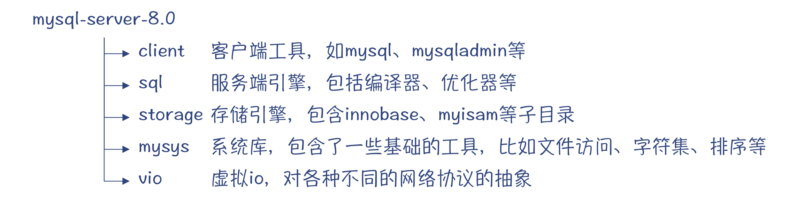
图1：MySQL的源代码包含的主要目录
MySQL的源代码主要是.cc结尾的，也就是说，MySQL主要是用C++编写的。另外，也有少量几个代码文件是用C语言编写的。
为了跟踪MySQL的执行过程，你要用Debug模式编译MySQL，具体步骤可以参考这篇开发者文档。
如果你用单线程编译，大约需要1个小时。编译好以后，先初始化出一个数据库来：
./mysqld --initialize --user=mysql
这个过程会为root@localhost用户，生成一个缺省的密码。
接着，运行MySQL服务器：
./mysqld &
之后，通过客户端连接数据库服务器，这时我们就可以执行SQL了：
./mysql -uroot -p #连接mysql server
最后，我们把GDB调试工具附加到mysqld进程上，就可以对它进行调试了。
gdb -p `pidof mysqld` #pidof是一个工具，用于获取进程的id，你可以安装一下
提示：这一讲中，我是采用了一个CentOS 8的虚拟机来编译和调试MySQL。我也试过在macOS下编译，并用LLDB进行调试，也一样方便。
注意，你在调试程序的时候，有两个设置断点的好地方：
- dispatch_command：在sql/sql_parse.cc文件里。在接受客户端请求的时候（比如一个SQL语句），会在这里集中处理。
- my_message_sql：在sql/mysqld.cc文件里。当系统需要输出错误信息的时候，会在这里集中处理。
这个时候，我们在MySQL的客户端输入一个查询命令，就可以从雇员表里查询姓和名了。在这个例子中，我采用的数据库是MySQL的一个示例数据库employees，你可以根据它的文档来生成示例数据库。
mysql> select first_name, last_name from employees; #从mysql库的user表中查询信息
这个命令被mysqld接收到以后，就会触发断点，并停止执行。这个时候，客户端也会老老实实地停在那里，等候从服务端传回数据。即使你在后端跟踪代码的过程会花很长的时间，客户端也不会超时，一直在安静地等待。给我的感觉就是，MySQL对于调试程序还是很友好的。
在GDB中输入bt命令，会打印出调用栈，这样你就能了解一个SQL语句，在MySQL中执行的完整过程。为了方便你理解和复习，这里我整理成了一个表格：
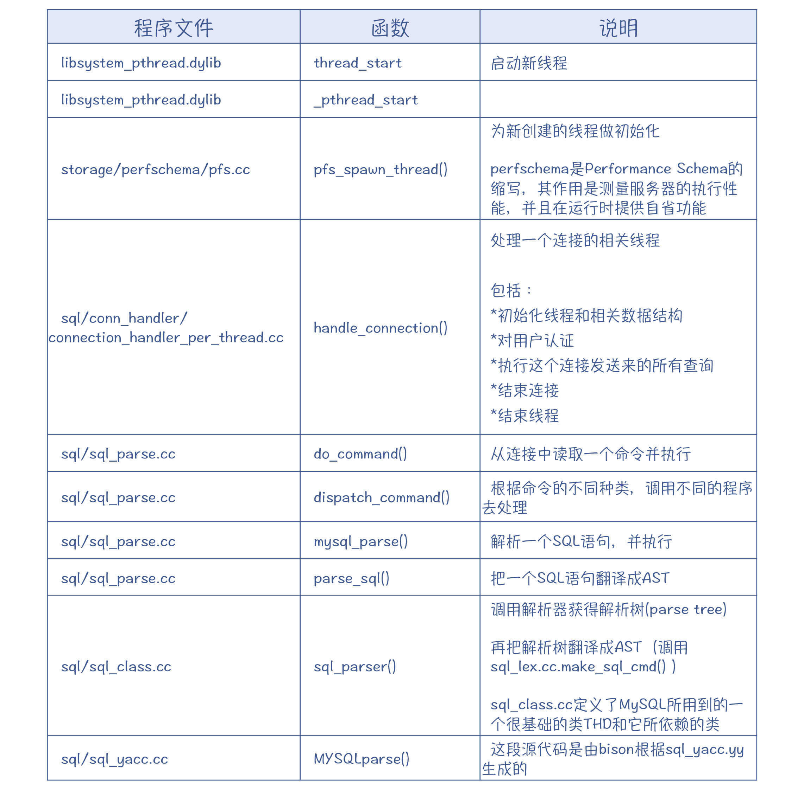
我也把MySQL执行SQL语句时的一些重要程序入口记录了下来，这也需要你重点关注。它反映了执行SQL过程中的一些重要的处理阶段，包括语法分析、处理上下文、引用消解、优化和执行。你在这些地方都可以设置断点。
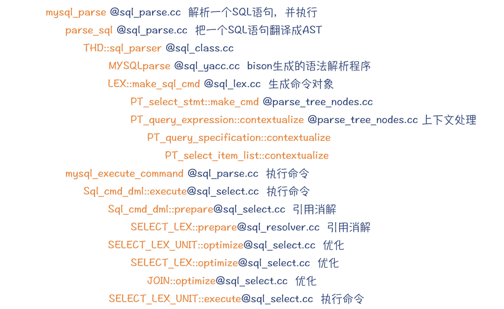
图2：MySQL执行SQL语句时的部分重要程序入口
好了，现在你就已经做好准备，能够分析MySQL的内部实现机制了。不过，由于MySQL执行的是SQL语言，它跟我们前面分析的高级语言有所不同。所以，我们先稍微回顾一下SQL语言的特点。
SQL语言：数据库领域的DSL
SQL是结构化查询语言（Structural Query Language）的英文缩写。举个例子，这是一个很简单的SQL语句：
select emp_no, first_name, last_name from employees;
其实在大部分情况下，SQL都是这样一个一个来做语句执行的。这些语句又分为DML（数据操纵语言）和DDL（数据定义语言）两类。前者是对数据的查询、修改和删除等操作，而后者是用来定义数据库和表的结构（又叫模式）。
我们平常最多使用的是DML。而DML中，执行起来最复杂的是select语句。所以，在本讲，我都是用select语句来给你举例子。
那么，SQL跟我们前面分析的高级语言相比有什么不同呢？
第一个特点：SQL是声明式（Declarative）的。这是什么意思呢？其实就是说，SQL语句能够表达它的计算逻辑，但它不需要描述控制流。
高级语言一般都有控制流，也就是详细规定了实现一个功能的流程：先调用什么功能，再调用什么功能，比如if语句、循环语句等等。这种方式叫做命令式（imperative）编程。
更深入一点，声明式编程说的是“要什么”，它不关心实现的过程；而命令式编程强调的是“如何做”。前者更接近人类社会的领域问题，而后者更接近计算机实现。
第二个特点：SQL是一种特定领域语言（DSL，Domain Specific Language），专门针对关系数据库这个领域的。SQL中的各个元素能够映射成关系代数中的操作术语，比如选择、投影、连接、笛卡尔积、交集、并集等操作。它采用的是表、字段、连接等要素，而不需要使用常见的高级语言的变量、类、函数等要素。
所以，SQL就给其他DSL的设计提供了一个很好的参考：
- 采用声明式，更加贴近领域需求。比如，你可以设计一个报表的DSL，这个DSL只需要描述报表的特征，而不需要描述其实现过程。
- 采用特定领域的模型、术语，甚至是数学理论。比如，针对人工智能领域，你完全就可以用张量计算（力学概念）的术语来定义DSL。
好了，现在我们分析了SQL的特点，从而也让你了解了DSL的一些共性特点。那么接下来，顺着MySQL运行的脉络，我们先来了解一下MySQL是如何做词法分析和语法分析的。
词法和语法分析
词法分析的代码是在sql/sql_lex.cc中，入口是MYSQLlex()函数。在sql/lex.h中，有一个symbols[]数组，它定义了各类关键字、操作符。
MySQL的词法分析器也是手写的，这给算法提供了一定的灵活性。比如，SQL语句中，Token的解析是跟当前使用的字符集有关的。使用不同的字符集，词法分析器所占用的字节数是不一样的，判断合法字符的依据也是不同的。而字符集信息，取决于当前的系统的配置。词法分析器可以根据这些配置信息，正确地解析标识符和字符串。
MySQL的语法分析器是用bison工具生成的，bison是一个语法分析器生成工具，它是GNU版本的yacc。bison支持的语法分析算法是LALR算法，而LALR是LR算法家族中的一员，它能够支持大部分常见的语法规则。bison的规则文件是sql/sql_yacc.yy，经过编译后会生成sql/sql_yacc.cc文件。
sql_yacc.yy中，用你熟悉的EBNF格式定义了MySQL的语法规则。我节选了与select语句有关的规则，如下所示，从中你可以体会一下，SQL语句的语法是怎样被一层一层定义出来的：
select_stmt:
query_expression
| ...
| select_stmt_with_into
;
query_expression:
query_expression_body opt_order_clause opt_limit_clause
| with_clause query_expression_body opt_order_clause opt_limit_clause
| ...
;
query_expression_body:
query_primary
| query_expression_body UNION_SYM union_option query_primary
| ...
;
query_primary:
query_specification
| table_value_constructor
| explicit_table
;
query_specification:
...
| SELECT_SYM /*select关键字*/
select_options /*distinct等选项*/
select_item_list /*select项列表*/
opt_from_clause /*可选：from子句*/
opt_where_clause /*可选：where子句*/
opt_group_clause /*可选：group子句*/
opt_having_clause /*可选：having子句*/
opt_window_clause /*可选：window子句*/
;
...
其中，query_expression就是一个最基础的select语句，它包含了SELECT关键字、字段列表、from子句、where子句等。
你可以看一下select_options、opt_from_clause和其他几个以opt开头的规则，它们都是SQL语句的组成部分。opt是可选的意思，也就是它的产生式可能产生ε。
opt_from_clause:
/* Empty. */
| from_clause
;
另外，你还可以看一下表达式部分的语法。在MySQL编译器当中，对于二元运算，你可以大胆地写成左递归的文法。因为它的语法分析的算法用的是LALR，这个算法能够自动处理左递归。
一般研究表达式的时候，我们总是会关注编译器是如何处理结合性和优先级的。那么，bison是如何处理的呢？
原来，bison里面有专门的规则，可以规定运算符的优先级和结合性。在sql_yacc.yy中，你会看到如下所示的规则片段：
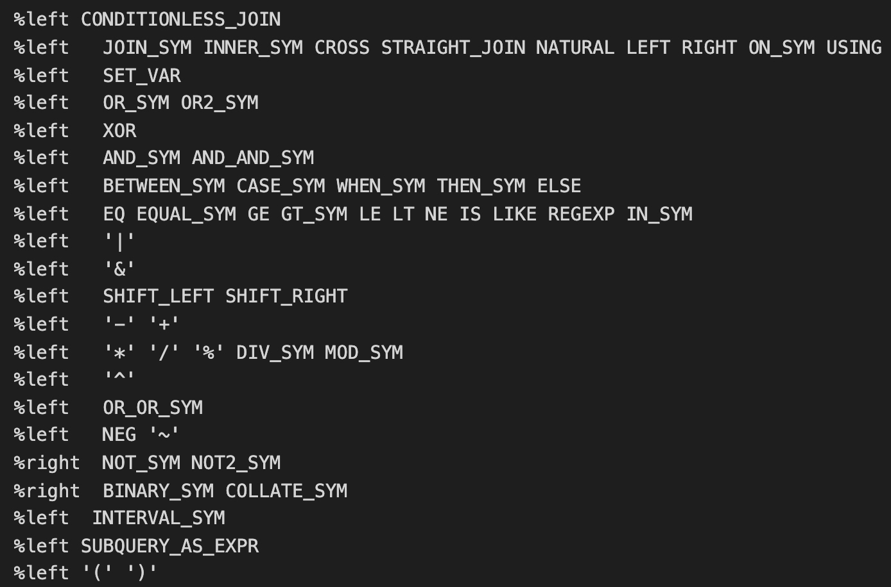
你可以看一下bit_expr的产生式，它其实完全把加减乘数等运算符并列就行了。
bit_expr :
...
| bit_expr '+' bit_expr %prec '+'
| bit_expr '-' bit_expr %prec '-'
| bit_expr '*' bit_expr %prec '*'
| bit_expr '/' bit_expr %prec '/'
...
| simple_expr
如果你只是用到加减乘除的运算，那就可以不用在产生式的后面加%prec这个标记。但由于加减乘除这几个还可以用在其他地方，比如“-a”可以用来表示把a取负值；减号可以用在一元表达式当中，这会比用在二元表达式中有更高的优先级。也就是说，为了区分同一个Token在不同上下文中的优先级，我们可以用%prec，来说明该优先级是上下文依赖的。
好了，在了解了词法分析器和语法分析器以后，我们接着来跟踪一下MySQL的执行，看看编译器所生成的解析树和AST是什么样子的。
在sql_class.cc的sql_parser()方法中，编译器执行完解析程序之后，会返回解析树的根节点root，在GDB中通过p命令，可以逐步打印出整个解析树。你会看到，它的根节点是一个PT_select_stmt指针（见图3）。
解析树的节点是在语法规则中规定的，这是一些C++的代码，它们会嵌入到语法规则中去。
下面展示的这个语法规则就表明，编译器在解析完query_expression规则以后，要创建一个PT_query_expression的节点，其构造函数的参数分别是三个子规则所形成的节点。对于query_expression_body和query_primary这两个规则，它们会直接把子节点返回，因为它们都只有一个子节点。这样就会简化解析树，让它更像一棵AST。关于AST和解析树（也叫CST）的区别，我在解析Python的编译器中讲过了，你可以回忆一下。
query_expression:
query_expression_body
opt_order_clause
opt_limit_clause
{
$$ = NEW_PTN PT_query_expression($1, $2, $3); /*创建节点*/
}
| ...
query_expression_body:
query_primary
{
$$ = $1; /*直接返回query_primary的节点*/
}
| ...
query_primary:
query_specification
{
$$= $1; /*直接返回query_specification的节点*/
}
| ...
最后，对于“select first_name, last_name from employees”这样一个简单的SQL语句，它所形成的解析树如下：
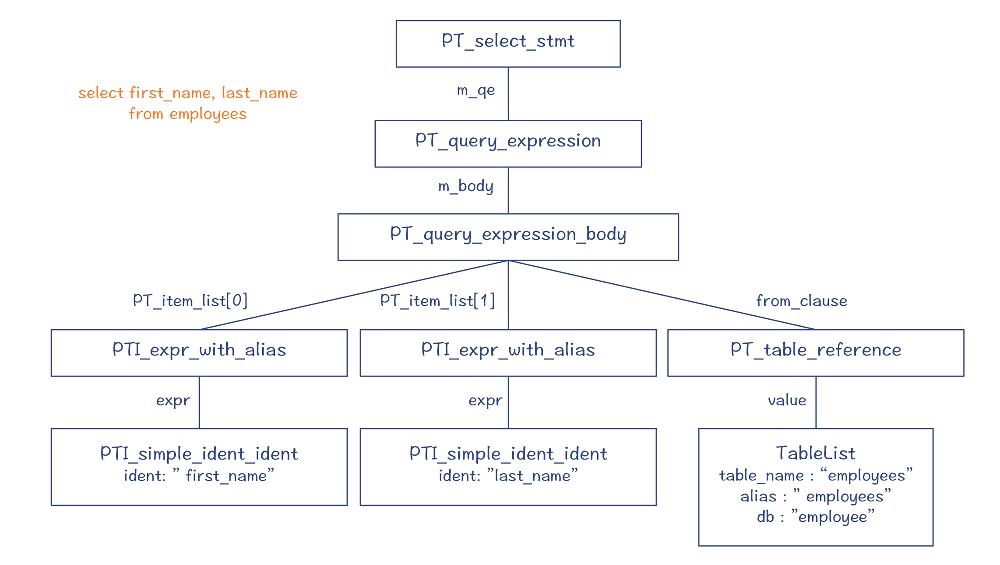
图3：示例SQL解析后生成的解析树
而对于“select 2 + 3”这样一个做表达式计算的SQL语句，所形成的解析树如下。你会看到，它跟普通的高级语言的表达式的AST很相似：
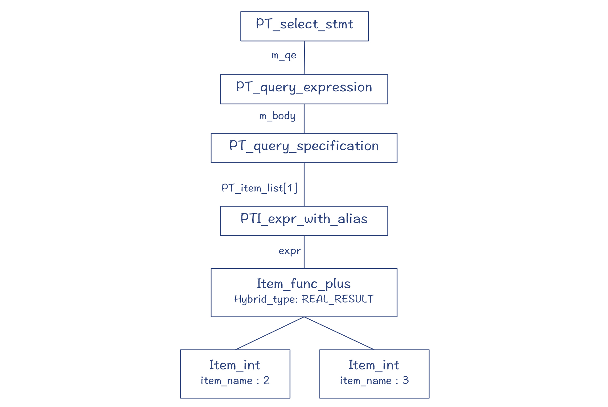
图4：“select 2 + 3”对应的解析树
图4中的PT_query_expression等类，就是解析树的节点，它们都是Parse_tree_node的子类（PT是Parse Tree的缩写）。这些类主要定义在sql/parse_tree_nodes.h和parse_tree_items.h文件中。
其中，Item代表了与“值”有关的节点，它的子类能够用于表示字段、常量和表达式等。你可以通过Item的val_int()、val_str()等方法获取它的值。
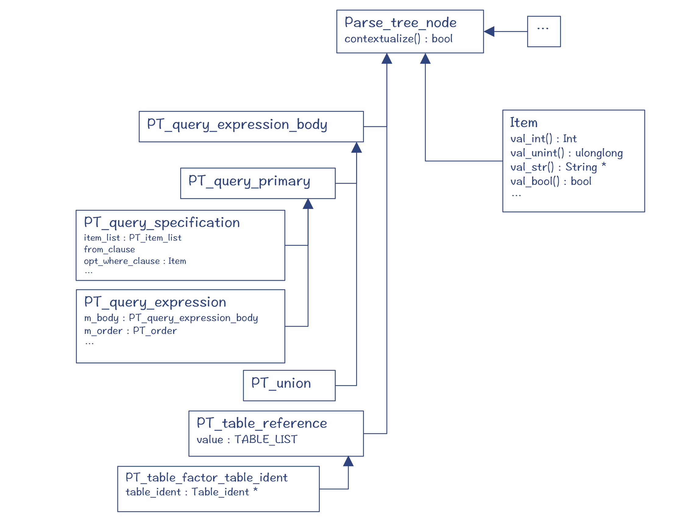
图5：解析树的树节点（部分）
由于SQL是一个个单独的语句，所以select、insert、update等语句，它们都各自有不同的根节点，都是Parse_tree_root的子类。
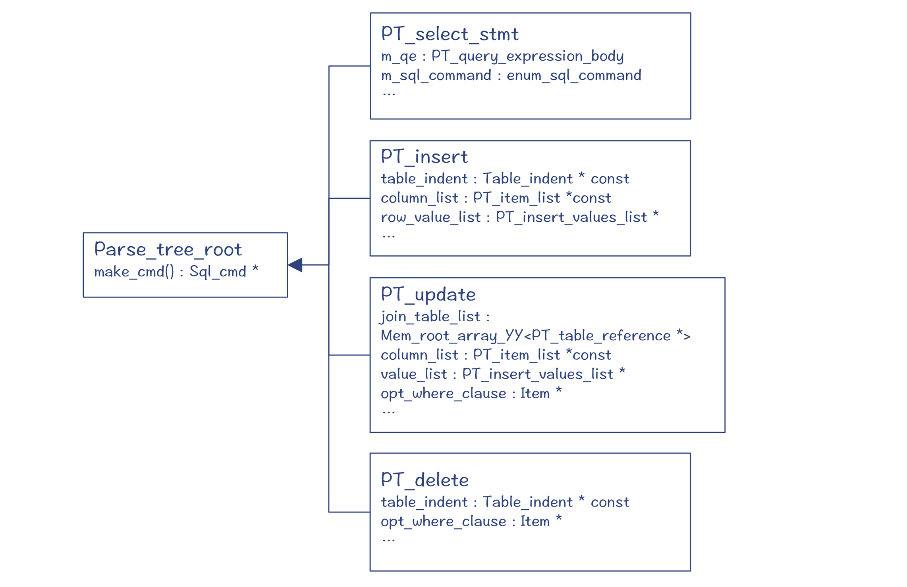
图6：解析树的根节点
好了，现在你就已经了解了SQL的解析过程和它所生成的AST了。前面我说过，MySQL采用的是LALR算法，因此我们可以借助MySQL编译器，来加深一下对LR算法家族的理解。
重温LR算法
你在阅读yacc.yy文件的时候，在注释里，你会发现如何跟踪语法分析器的执行过程的一些信息。
你可以用下面的命令，带上“-debug”参数，来启动MySQL服务器：
mysqld --debug="d,parser_debug"
然后，你可以通过客户端执行一个简单的SQL语句：“select 2+3*5”。在终端，会输出语法分析的过程。这里我截取了一部分界面，通过这些输出信息，你能看出LR算法执行过程中的移进、规约过程，以及工作区内和预读的信息。
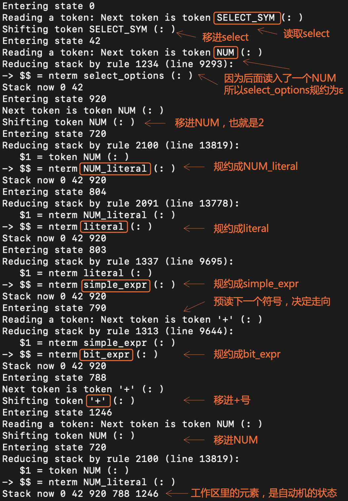
我来给你简单地复现一下这个解析过程。
第1步，编译器处于状态0，并且预读了一个select关键字。你已经知道，LR算法是基于一个DFA的。在这里的输出信息中，你能看到某些状态的编号达到了一千多，所以这个DFA还是比较大的。
第2步，把select关键字移进工作区，并进入状态42。这个时候，编译器已经知道后面跟着的一定是一个select语句了，也就是会使用下面的语法规则：
query_specification:
...
| SELECT_SYM /*select关键字*/
select_options /*distinct等选项*/
select_item_list /*select项列表*/
opt_from_clause /*可选：from子句*/
opt_where_clause /*可选：where子句*/
opt_group_clause /*可选：group子句*/
opt_having_clause /*可选：having子句*/
opt_window_clause /*可选：window子句*/
;
为了给你一个直观的印象，这里我画了DFA的局部示意图（做了一定的简化），如下所示。你可以看到，在状态42，点符号位于“select”关键字之后、select_options之前。select_options代表了“distinct”这样的一些关键字，但也有可能为空。
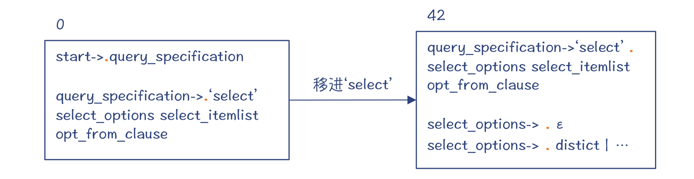
图7：移进select后的DFA
第3步，因为预读到的Token是一个数字（NUM），这说明select_options产生式一定生成了一个ε，因为NUM是在select_options的Follow集合中。
这就是LALR算法的特点，它不仅会依据预读的信息来做判断，还要依据Follow集合中的元素。所以编译器做了一个规约，也就是让select_options为空。
也就是，编译器依据“select_options->ε”做了一次规约，并进入了新的状态920。注意，状态42和920从DFA的角度来看，它们是同一个大状态。而DFA中包含了多个小状态，分别代表了不同的规约情况。
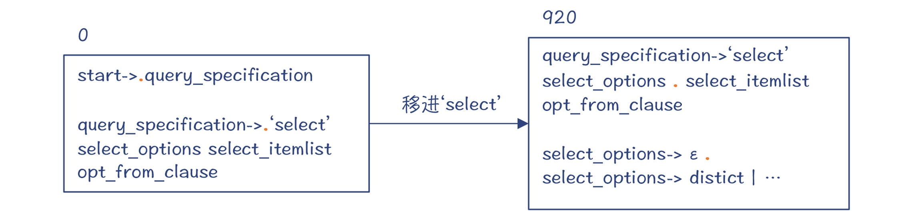
图8：基于“select_options->ε”规约后的DFA
你还需要注意，这个时候，老的状态都被压到了栈里，所以栈里会有0和42两个状态。栈里的这些状态，其实记录了推导的过程，让我们知道下一步要怎样继续去做推导。
图9：做完前3步之后，栈里的情况
第4步，移进NUM。这时又进入一个新状态720。
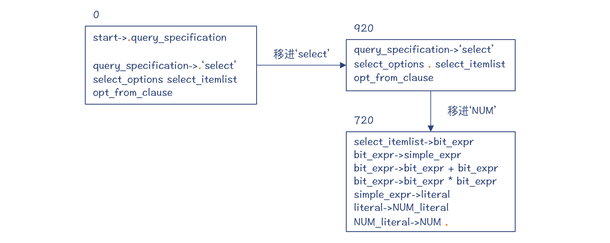
图10：移进NUM后的DFA
而旧的状态也会入栈，记录下推导路径：
图11：移进NUM后栈的状态
第5~8步，依次依据NUM_literal->NUM、literal->NUM_literal、simple_expr->literal、bit_expr->simple_expr这四条产生式做规约。这时候，编译器预读的Token是+号，所以你会看到，图中的红点停在+号前。
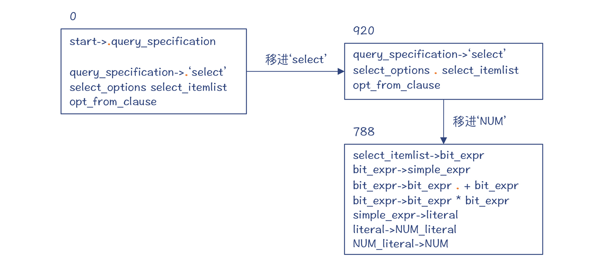
图12：第8步之后的DFA
第9~10步，移进+号和NUM。这个时候，状态又重新回到了720。这跟第4步进入的状态是一样的。
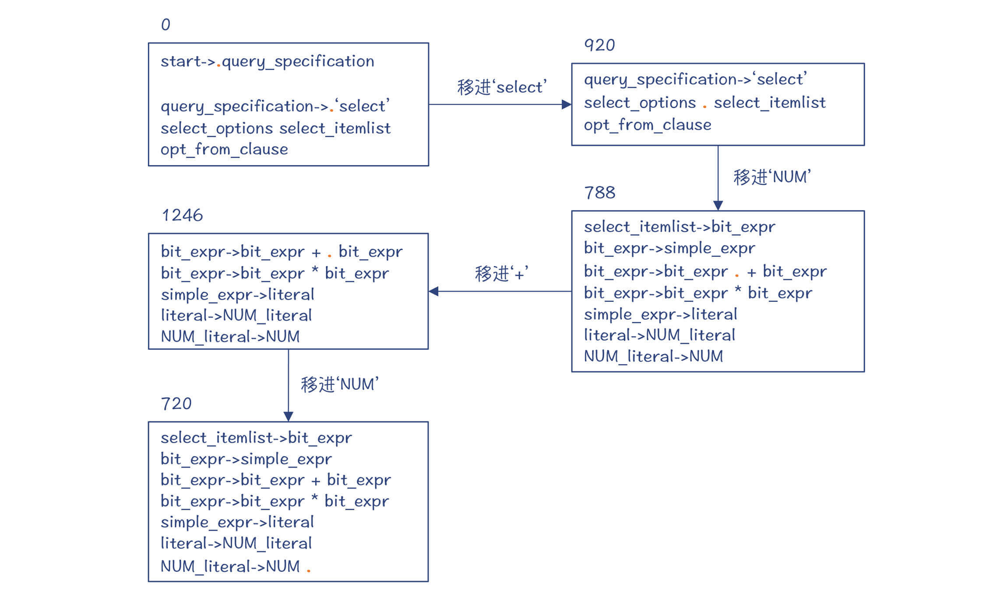
图13：第10步之后的DFA
而栈里的目前有5个状态，记录了完整的推导路径。
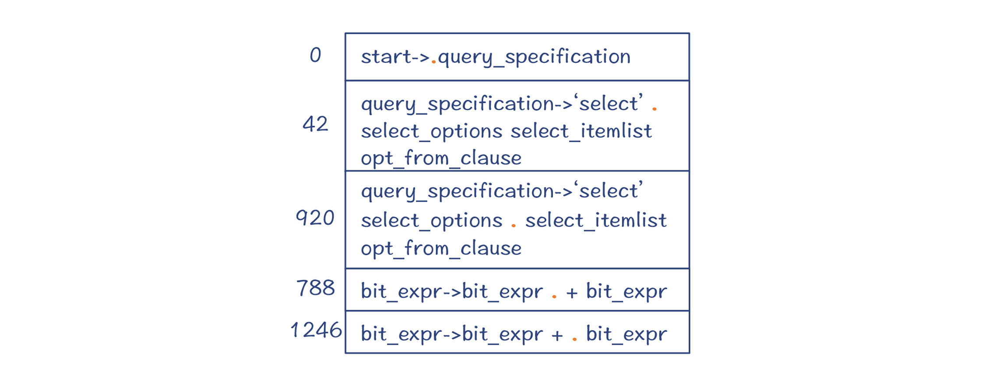
图14：第10步之后栈的状态
到这里，其实你就已经了解了LR算法做移进和规约的思路了。不过你还可以继续往下研究。由于栈里保留了完整的推导路径，因此MySQL编译器最后会依次规约回来，把栈里的元素清空，并且形成一棵完整的AST。
课程小结
这一讲，我带你初步探索了MySQL编译SQL语句的过程。你需要记住几个关键点：
- 掌握如何用GDB来跟踪MySQL的执行的方法。你要特别注意的是，我给你梳理的那些关键的程序入口，它是你理解MySQL运行过程的地图。
- SQL语言是面向关系数据库的一种DSL，它是声明式的，并采用了领域特定的模型和术语，可以为你设计自己的DSL提供启发。
- MySQL的语法分析器是采用bison工具生成的。这至少说明，语法分析器生成工具是很有用的，连正式的数据库系统都在使用它，所以你也可以大胆地使用它，来提高你的工作效率。我在最后的参考资料中给出了bison的手册，希望你能自己阅读一下，做一些简单的练习，掌握bison这个工具。
- 最后，你一定要知道LR算法的运行原理，知其所以然，这也会更加有助于你理解和用好工具。
我依然把本讲的内容给你整理成了一张知识地图，供你参考和复习回顾：
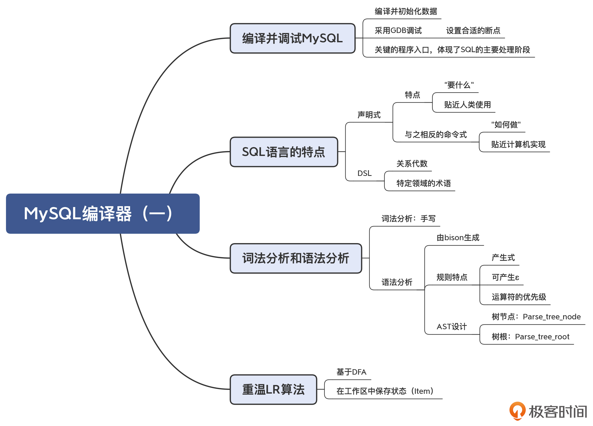
一课一思
我们今天讲到了DSL的概念。你能分享一下你的工作领域中的DSL吗？它们是否也是采用声明式的？里面用到了哪些特定领域的术语？欢迎在留言区分享。
感谢你的阅读。如果有收获，欢迎你把今天的内容分享给更多的朋友。
参考资料
- MySQL的内行手册（MySQL Internals Manual）能提供一些重要的信息。但我发现文档内容经常跟源代码的版本不同步，比如介绍源代码的目录结构的信息就过时了，你要注意这点。
- bison的手册。
© 2019 - 2023 Liangliang Lee. Powered by gin and hexo-theme-book.